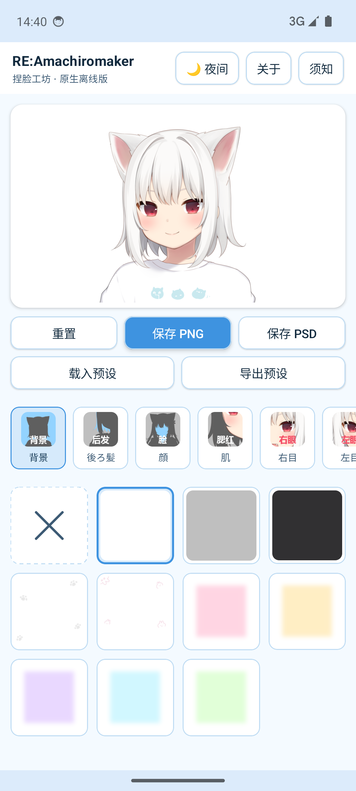
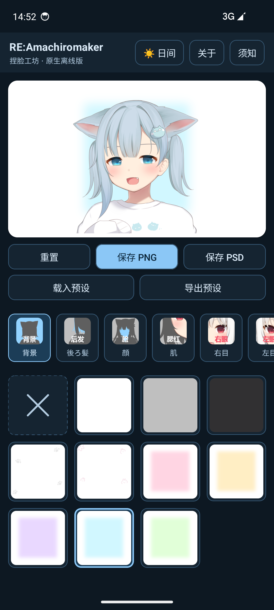
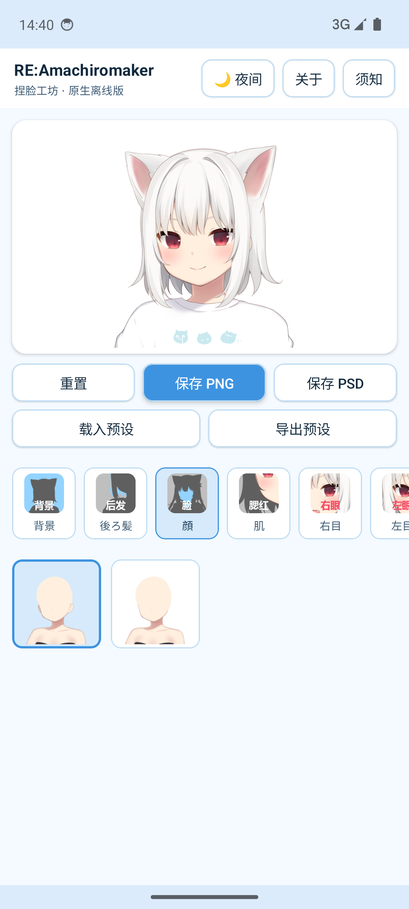
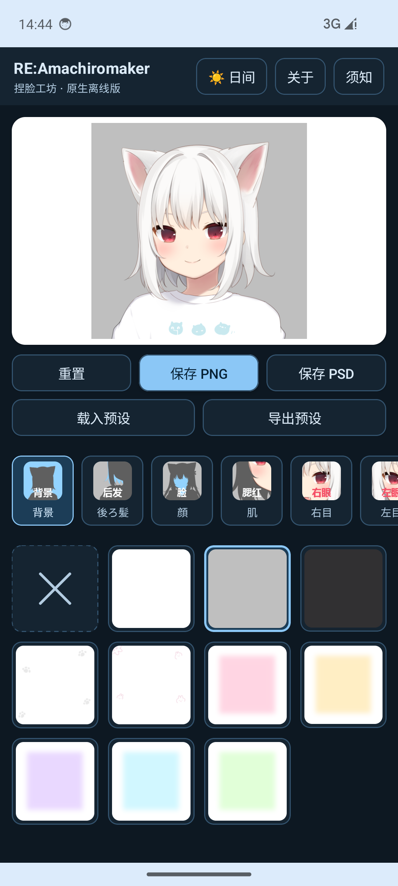
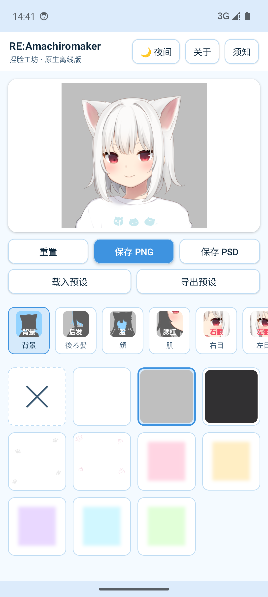
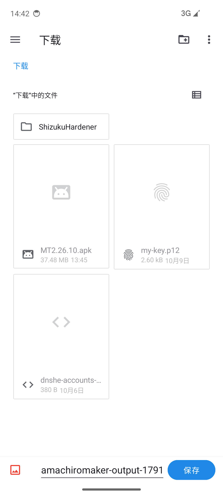
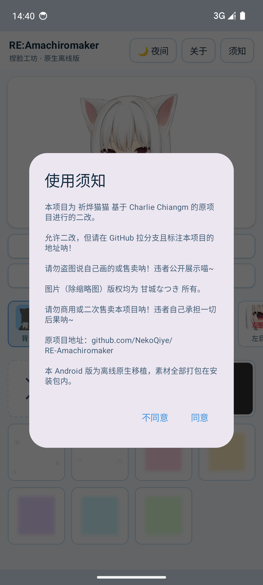
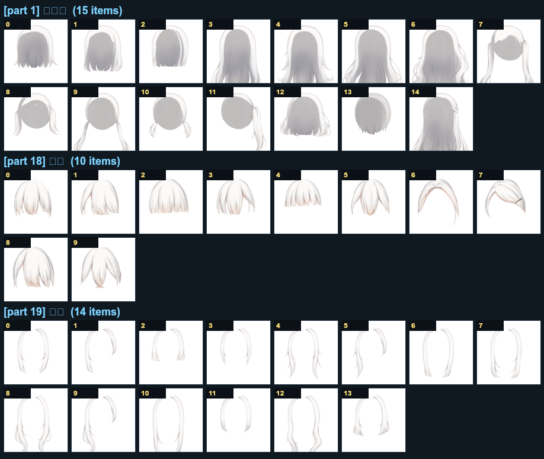
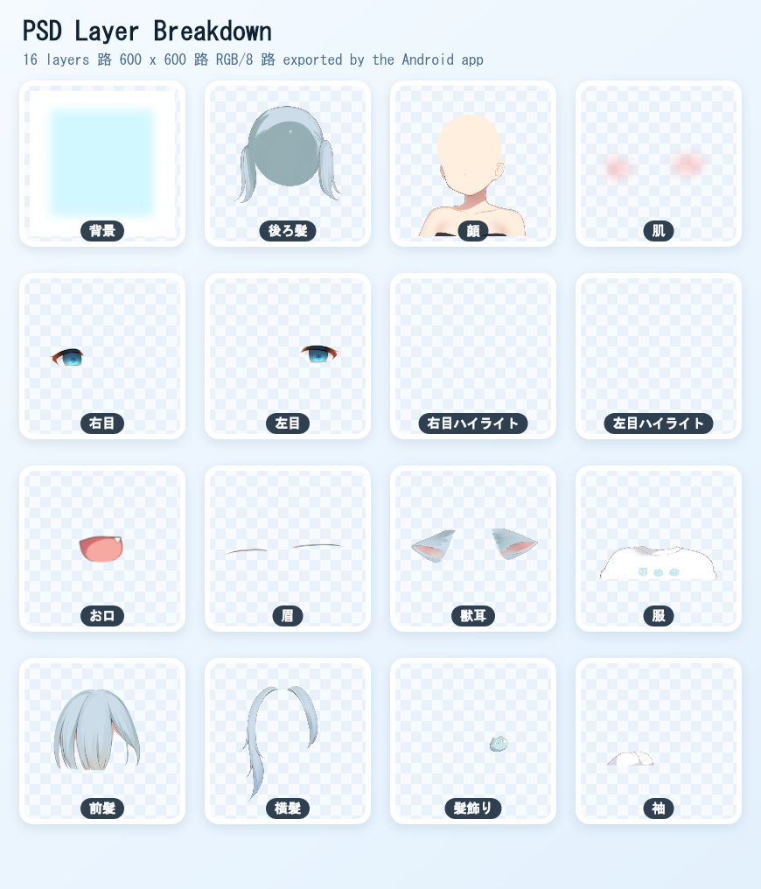

原生 Compose 界面
标签页、贴图网格、色板、对话框全部由 Kotlin + Jetpack Compose 绘制，跟系统主题、手势、旋转保持一致。
不是把网页塞进浏览器控件，而是用安卓自己的零件重做了一遍。
标签页、贴图网格、色板、对话框全部由 Kotlin + Jetpack Compose 绘制，跟系统主题、手势、旋转保持一致。
32 MB 素材随安装包一起走，安装后无需联网即可使用；安装包内没有申请 INTERNET 权限。
每个部位写成一个独立图层，带图层名与坐标，Photoshop、Krita、GIMP、Photopea 都能继续编辑。
同一款贴图自带多套配色，圆形色板点一下就换；发色、瞳色、背景色都是同一套机制。
搭配可导出成 JSON，也能直接载入网页版导出的预设，格式完全一致。
600 × 600 的成品图写进 Pictures/Amachiromaker/，相册应用里立刻能看到。
下面每一张都是在 Android 14 模拟器里实际跑出来的画面，点击可放大。








下面这张是用第三方 PSD 解析器把应用导出的文件重新展开的结果：16 个图层、名字和位置都对得上。

背景 / 後ろ髪 / 顔 / 右目 / 獣耳 / 服 …… 与界面里的部位一一对应。
只保存贴图占用的矩形区域，文件更小，打开更快。
PSD 容器由 Kotlin 手写生成，没有引入任何第三方图像库。
同样的数据与素材，不同的实现方式。
| 环节 | 网页版 | 安卓原生版 |
|---|---|---|
| 界面 | React + HTML + CSS | Kotlin + Jetpack Compose |
| 叠图合成 | 浏览器 Canvas | android.graphics.Canvas → Bitmap |
| PSD 生成 | ag-psd（浏览器） | 手写 PSD 编码器（Kotlin） |
| 素材来源 | 本地 / CDN 文件 | APK assets，随包分发 |
| 进度保存 | localStorage | SharedPreferences |
| 文件导出 | 浏览器下载 | MediaStore 相册 + 系统文件选择器 |
| 网络 | 首次加载需联网 | 不申请网络权限 |
单文件 APK，无需安装框架、无需登录、无需联网。
安装包同时部署在多个节点上。点击测速后，浏览器会并行拉取各节点的一份小样本， 算出实时速度并自动从最快的节点开始下载；最快节点会记在本机，下次优先使用。
Android 7.0 及以上 · 39.15 MB · 本地签名（非商店包，安装时选择「仍要安装」即可）
SHA-256 cdc7269d4f165e481d6f7fe13290b77f786dce95e7ccf2bcd23b279f8e80940d
这个项目是二改产物，请连同原作者信息一起保留。